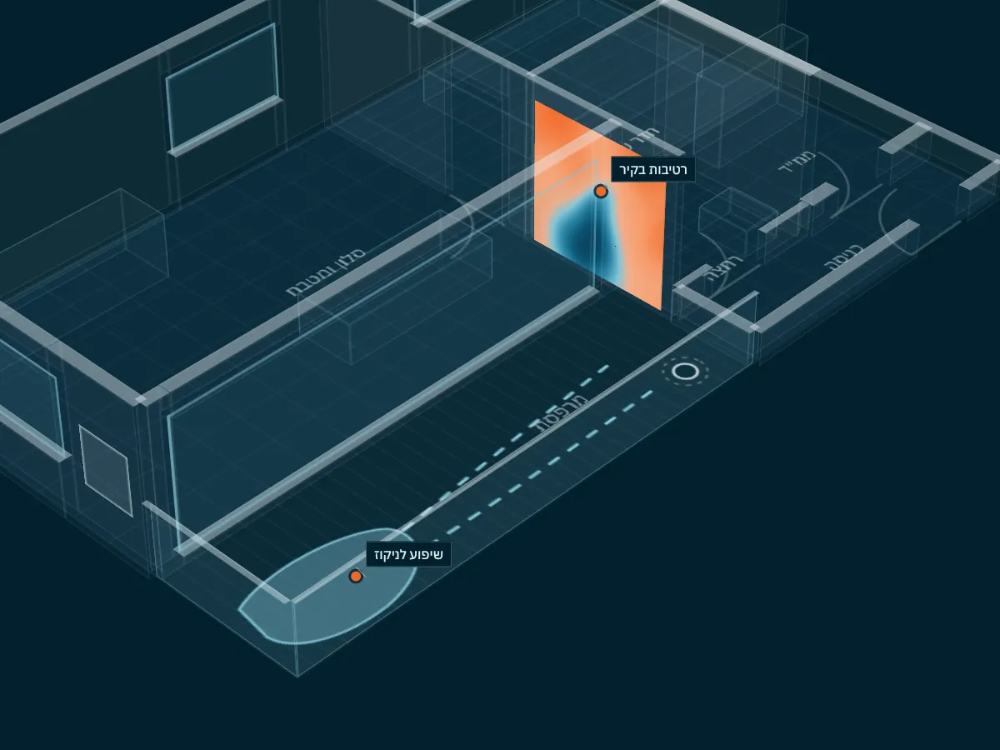

מאתר ליקויי בנייה מטעם איגוד המהנדסים לבנייה ולתשתיות
מאתר ליקויי בנייה מטעם איגוד המהנדסים לבנייה ולתשתיות
מים: רטיבות, איטום וניקוז
רטיבות לא נעצרת לבד. היא מתפשטת, פוגעת בטיח ובצבע ומביאה עובש, ולרוב המקור בצנרת או באיטום.
- רטיבות ונזילותבקירות, בתקרה וברצפה, בעיקר ליד חדרים רטובים וקירות חוץ.מצלמה תרמית ומד לחות
- איטוםמרפסות, מקלחות וגגות. כשל באיטום מתגלה לרוב אצל השכן מלמטה.
- שיפועים וניקוזשהמים זורמים לנקודת הניקוז ולא נשארים עומדים.